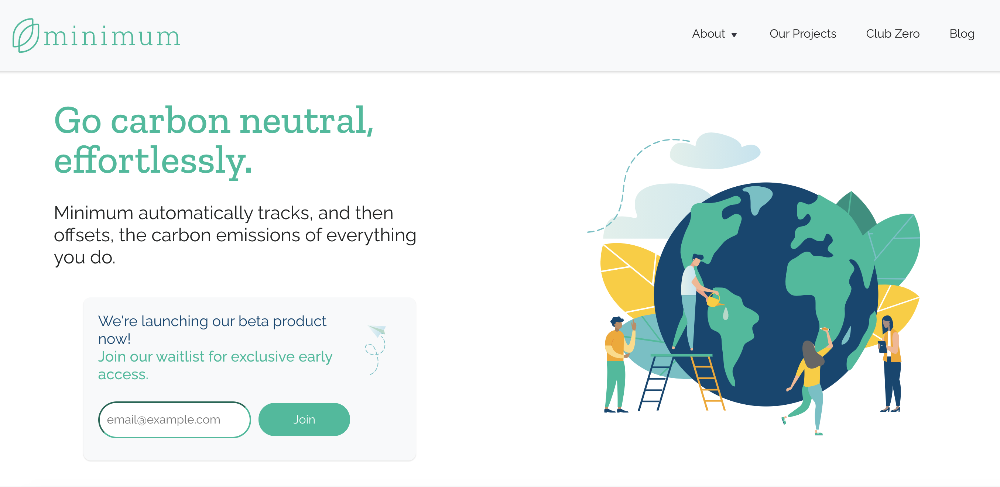
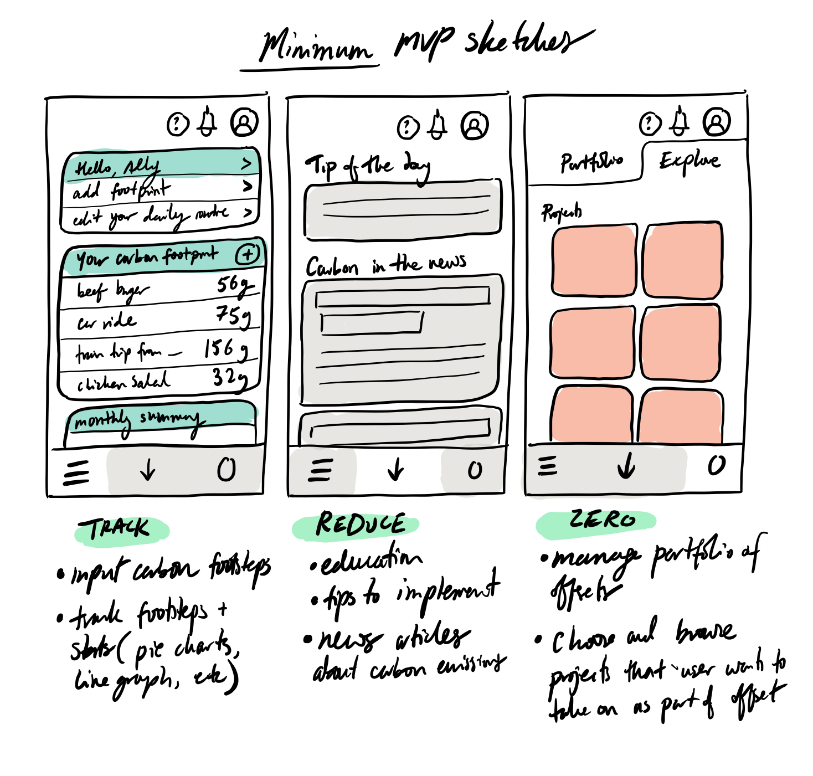
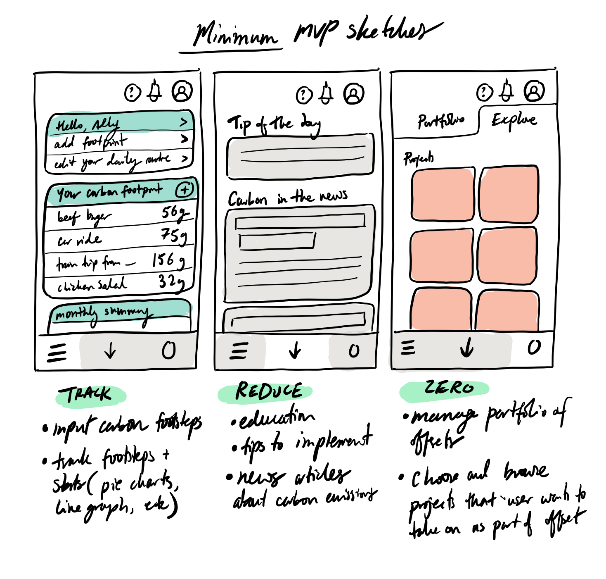

Iterative Design: minimum.eco
The goal of this assignment is to design an interface for an emerging startup by sketching out some ideas, converging them into a prototype, and improve the final interface after conducting user testing.
11/10/20

Part 0: Selecting a Startup + Interface
For this project, we chose to create a mobile app for minimum, a startup that helps to track, reduce, and offset users' carbon emmissions. Minimum connects with users bank accounts to parse their transactions and calculate their carbon emmissions. It then allows users to buy into existing projects that will automatically offset their environmental impacts.
We believe that anyone and everyone can and should use this app, as everyone should be making an effort to reduce their carbon emmissions and negative environmental impacts. The main users of this app are most likely average people that are trying to make an effort to be more sustainable and environmentally conscious. Regardless of whether or not users can afford to buy into projects to offset their emmissions, everyone can still benefit from the track and reduce features of the app.
Part 1: Sketching & Wireframing
We began by sketching four different interface ideas for the app (shown below). After looking through all the ideas and discussing which components of each skecth best represented minimum's goals, we created a simple wireframe to guide our prototype design.
 

The main features we decided to keep from the sketches and add to the wireframes were the:
- Bottom nav bar
- Three main screens for each of minimum's goals (track, reduce, and offset)
- "Portfolio" and "project" sections in the "offset" screen
- The track page as the main/home page
- A "log" feature in the "track" page to allow for users to manually input data not in their transaction history
TRACK:
In the track section, you can see a dashboard breaking down your carbon footprint in the past week. Minimum automatically scrapes information from your bank expenditure to understand the products and services you consumed that would contribute to your carbon footprint.For more granular items like mileage, time spent in the shower, and cash purchases not included in bank information, you can update your carbon foosteps with the daily check-in function in addition to logging individual items.
REDUCE:
The reduce section shows tips of the day, educational components suggested to users by the app, in addition to top news items about carbon emissions.
ZERO:
The offsets section will be where users manage their carbon offsets portfolio. This is where they can see what their current portfolio comprises of, whether it is deforestation projects or replanting reefs. Users will also be able to buy into new projects, which they can browse in a discover sub section.
This led to the development of the below wireframes:
Part 2: Mockups
Next, we made an interactive “high-fidelity”(hi-fi) prototype based off the wireframe we created in Part 1, after which we presented our mockup in studio for a round of critiques.

We then created the high-fidelitey prototypes from our wireframes, which we presented to our peers and a guest industry critic for feedback. The general consensus was that:
-
We needed more consistent trainsitions, CTA, and fonts
-
The navbar icons were not informative enough on their own
-
Inconsistent use of color-coding for increases/decreases
This led us to develop a more cohesive style guide in addition to the prototype in the following section:

We then created the high-fidelitey prototypes from our wireframes, which we presented to our peers and a guest industry critic for feedback. The general consensus was that:
- We needed more consistent trainsitions, CTA, and fonts
- The navbar icons were not informative enough on their own
- Inconsistent use of color-coding for increases/decreases
This led us to develop a more cohesive style guide in addition to the prototype in the following section:
Prototype
Tasks to think about: how would you log your daily carbon footprint? How would you add another project to your carbon emissions portfolio?
These are some sample videos of how you can log new data in the app or buy a project and add it to your portfolio:


Part 3: User Testing
In our final step, we conducted our own usability test through a remote user testing service (UserTesting.com), using our newly created, interactive hi-fi prototype.
Tasks given to users:
- First, you would like to track your carbon emissions in this past week. How would go about that? What day did you emit the most carbon? [Success: Yes, No]
- Now, you would like to log your daily carbon emissions. Walk me through how you would do that. [Success: Yes, No]
- Your next task is to explore your current portfolio holdings of carbon projects. Which project currently does your portfolio comprise the most of? [Success: Yes, No]
- Finally, you would like to browse carbon projects and add a new one to your portfolio. Protecting Rainforest looks particularly attractive to you. Walk us through this process. [Success: Yes, No]
Questionnaire items:
- What frustrated you most about this site?
- If you had a magic wand, how would you improve this site?
- What did you like about the site?
- How likely are you to recommend this site to a friend or colleague (0=Not at all likely, and 10=Very Likely)?
User 1 Response not available (not downloading)
User 2 Response:
User 3 Response:
Analysis:
Overall, the feedback we received was quite positive. User 1 had the hardest time of the three users navigating the app, especially with the first task of tracking which day he emitted the most carbon. He attributed this to the lack
of labeling on the graphs. Because of the nature of the prototype as a mockup with less detail, and hence the graphs were intentionally vague, we believed this made a lot of sense but was not worth modifying in the final iteration.
User 2 and 3 had an easier time navigating the interface, and both were quick in being able to identify how to log their footprint in addition to adding a project to their portfolio. Interface-wise however, both had some
issues reading all text, and future design would increase the size of the labels especially on the navigation bar.
However, overwhelmingly, the first task was somewhat confusing for all users. Only the second user fully
answered the question of which day had the most emissions, as the first user ended up giving up on the task upon not finding the graph informative informative enough, and the third user thinking she had completed the task but only
entering into the submission form. This is largely because the dashboard is not as interactive as the other areas and is simply a static page filled with some graphs and text. The next iteration of designs would make them pop up
and clickable in some areas to make them more engaging.
Key points from the final questionnaire are summarized below:
-
Frustrations:
letters are way too small, data entry is too hard (too manual; more data points could be automatically collected); weekly graph was uninformative
-
Magic Wand:
Make the words pop more or change from black to another color; give the app more ways to track data, such as through miles travelled or shower time length timer in the same way fitbits have additional features. This way users don't have to manually enter data but simply connect a device.
-
Like about the site:
Navigation was generally easy; aesthetic is very clean, and traversal is generally intuitive.
-
Recommend (out of 10)?
7,8,5
Final changes to interface:
Some final changes we would make based on the feedback received would include making the dashboard more engaging and self-intuitive, because this is the area most people struggled with. One person's comment about the text being not
visible is enough to justify making the text larger, or having an option to being able to do so. Afterall, accessibility has to include everyone!
For the purpose of the mockup, the quiz and logging information was very
general. The next iteration of designs would test the actual forms themselves and which pieces of information are most logged, and which need to be made easier to log perhaps through automatic entry as one user suggested.